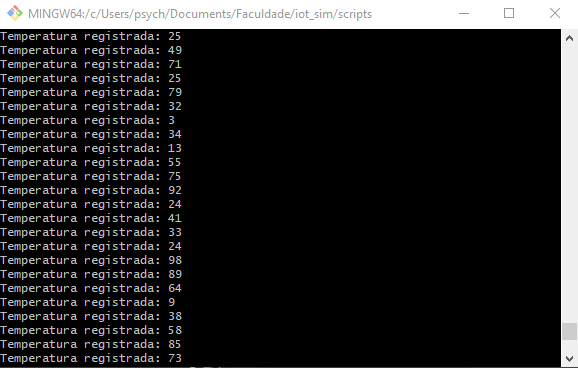
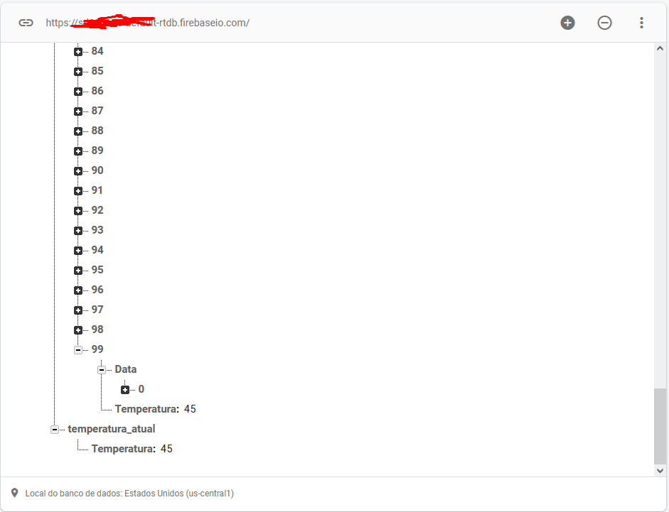

Projetos
Sobre
Este projeto foi desenvolvido para a matéria de Desenvolvimento Web, onde a pauta consistia
no desenvolvimento de uma aplicação web para a comunidade de Ijui, para isto,
decidi desenvolver um website para que as pessoas possam anúnciar seus livros também,
navegar pelo site visulizando os livros dos outros usuários e oferecer livros em troca.
O aplicativo consiste em um sebo online, onde o visitante podem ver os livros em anúncio,
porém não podem interagir com estes mesmos. Usuários cadastrados podem fazer ofertras de
troca
nos anúncios de outros usuários e também visualizar e responder as ofertas recebidas em seus
proprios anúncios
Tecnologias utilizadas:
- PHP com framework MVC e CRUD
- JavaScript
- Banco de dados SQL
Video demonstrativo:
Sobre
A seguinte simulação foi desenvolvida para realizar estudos sobre a arquitetura de sistemas
IoT e as tecnologias utilizadas em aplicações. A implementação
consiste em simular a leitura de um termometroa através de um script gerando números
aleatórios e os enviando para o Broker MQTT em uma maquina virtual da Amazon. Outro
script ficará escutando as publicações no broker, e as redicionará para um banco NOSQL, e a
leitura desses dados armazenados é feita por uma página web.
Tecnologias utilizadas:
- JavaScript
- Broker Mosquitto
- Firebase (NOSQL)
Script simulando coleta de dados de um sensor:

Dados sendo armazenados no FireBase:

Dados sendo exibidos em pagina web:

Sobre
Este jogo foi desenvolvido com o intuito de exercitar e fixar os aprendizados do curso de
Jquery da Alura
Tecnologias utilizadas:
- JavaScript com JQuery
- HTML e CSS
Você pode experimentar o jogo, clicando AQUI!